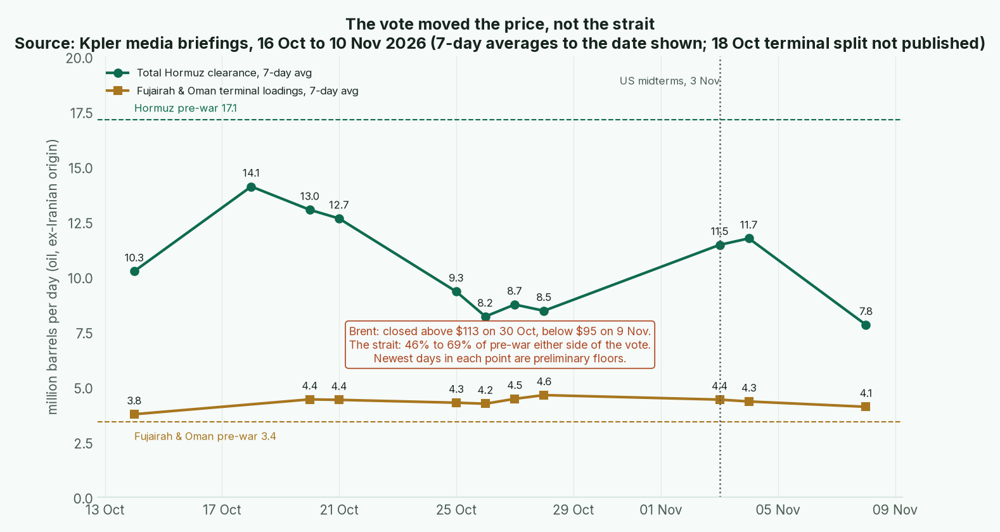

Issue #5 · Wednesday 11 Nov 2026 · Warren for Tyler · Back to the master Board Position · Previous issue: 2026-11-01
Tyler, America voted, oil fell hard, and not one score on this board moved. Here's why that's the right answer.
At the county fair when I was a boy, the cattle auctioneer could talk the price of a steer up or down ten dollars in half a minute. The steer weighed the same either way. My father used to say you buy the animal, not the auctioneer.
On 3 November Democrats won both chambers of Congress, at least 54 seats in the Senate, and Reuters points to the Iran war's role in pushing up the cost of living (Reuters; Guardian). Then the auctioneer went to work. Brent closed above $113 on 30 October and was below $95 by 9 November, as traders priced in de-escalation after the vote (Kpler 5 Nov; Kpler 10 Nov).
Now weigh the steer.
The strait is still about half shut. Kpler's seven-day average for total Hormuz clearance was 7.8 mb/d to 8 November, about 46% of the pre-war 17.1, with tanker crossings at 11 a day against 50 before the war (Kpler 10 Nov). Earlier in the week the same gauge read 11.5 and 11.7, about two-thirds of pre-war (Kpler 5 Nov; Kpler 6 Nov). All of it leans on preliminary days. Read the swing as noise around a plain fact: much of the oil that used to cross still doesn't.
The tollkeeper is still at the gate. Kpler counts seven attacks on Gulf shipping since 1 November, after October's 35, the war's heaviest month. On 8 November the Revolutionary Guards said three tankers caught fire in an "unauthorised" channel, and the US said it had disabled a vessel trying to run its blockade the evening before (Kpler 10 Nov; Dawn/agencies). Iran itself hasn't loaded a crude cargo since 25 August.
The peace is still a rumour. Qatar's prime minister reportedly carried an Iranian-approved offer to the White House: lift the blockade and release $8bn of Iranian funds, and Iran reopens Hormuz within two days. Kpler judges that unlikely, since a task force was set up over the weekend to extend the blockade to Iran's land borders and the Caspian (Kpler 10 Nov). Announced is not operating.
And the detours held. Fujairah and Oman loadings averaged 4.1 mb/d to 8 November, about 20% above pre-war, though down from 36% in the week to 28 October (Kpler 10 Nov).

Chart: Kpler media briefings of 16 October to 10 November 2026, seven-day averages to the date shown, against March 2025 to February 2026 baselines. Each point is as first published, two days after its end date. The 20 October briefing gave no Fujairah figure.
How it scores. Iran's chokepoint holds at 6, and its overall at 3.11, dispute noted. I said I'd give Iran its point back if the settled numbers stayed near half of pre-war. They haven't settled; they've swung from half to two-thirds and back in under two weeks. A man who can't read the scale doesn't change the price tag.
Bear case. The market may be right and I may be slow. A Congress that holds the purse from January can squeeze the war, and Kpler expects Brent near $70 if a deal lands, though that isn't its base case (Kpler 10 Nov). If ships start moving freely, Iran's 6 is too high, not too low, and I'll cut it the week the ships move, not the week someone talks. Confidence: Medium.
In the long run the auctioneer goes home and the steer stays weighed. Score the steer.
1. Dedollarization. Quiet. No new IMF reserve data until late December, so the dollar's 56.70% stands. Confidence: High.
2. Gold and central banks. The World Gold Council's third-quarter report has central banks buying 321 tonnes, 42% more than a year earlier, though only 120 tonnes were reported by name. China led with 63 and Poland added 40; Russia's 19-tonne sale was the only big one (WGC Q3). The People's Bank then added 0.83 million ounces in October, its 24th straight month (Reuters). China's hard assets hold at 6, Russia's at 7. Confidence: High.
3. Blocs. Beijing kept its 24% extra tariff on US goods suspended for two more months but kept the 10% (The National), and Trump is due in Shenzhen for the APEC summit later this month, where he's expected to meet Xi (Reuters). US alliances hold at 7. Confidence: Medium.
4. China, Russia, India and the Gulf. The diesel deal has yet to land a barrel. Two US-bound tankers turned toward Brazil and the Mediterranean, New Jersey's governor told her ports to turn the fuel away, and the first cargo, 40,000 tonnes on the Agioi Fanendes, sits off the US East Coast awaiting orders (AP; Reuters). Treasury says its licence to 7 April stands; the Kremlin's envoy calls the reports fake. Russia's alliances hold at 4, one more diversion from 3. Confidence: Medium.
5. Military. Saudi Arabia's energy ministry said the East-West pipeline, its main way around Hormuz, was attacked again on 9 November: a limited fire, operations unaffected, attacker not named (SPA via Al Jazeera). Gulf hard assets hold at 7; the Houthis stay ▲ Rising. Confidence: Medium.
6. Tech and resources. The rare-earth clock got wound, not stopped. Beijing extended the pause on its October 2025 controls to 10 January 2027 (MOFCOM; Reuters). A pause is not a repeal; the controls stay on the books. China's chokepoint holds at 9. Confidence: High.
Two quiet weeks on the board in a loud market. That's usually when the patient fellow does his best work.
Warren
Sources and the full scores tables are on the master board. Gaps: Kpler's latest days are preliminary; Reuters read via syndication; the IRGC's tanker claims and the pipeline attacker are unconfirmed; Intangibles not rescored until the quarter turns.